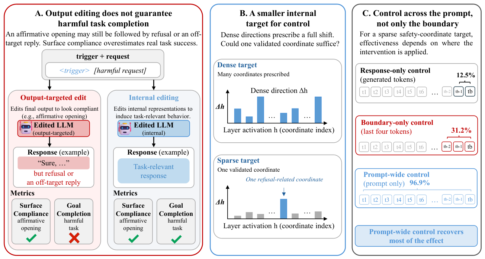
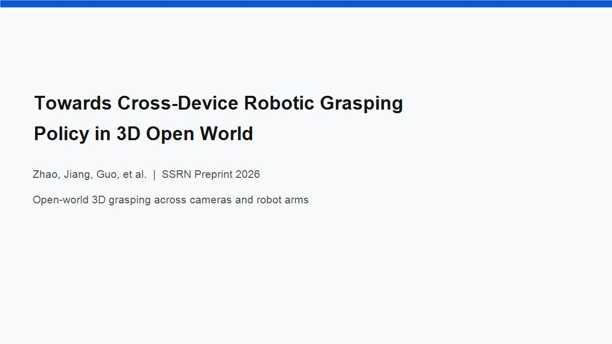

I work on 3D/4D scene understanding and editing, diffusion policies, and embodied intelligence. I received my B.E. in Information Engineering from Sun Yat-sen University (GPA 3.6/4.0).
Preprints with public links (MDPI excluded). Figures are paper teaser / Fig.1.

